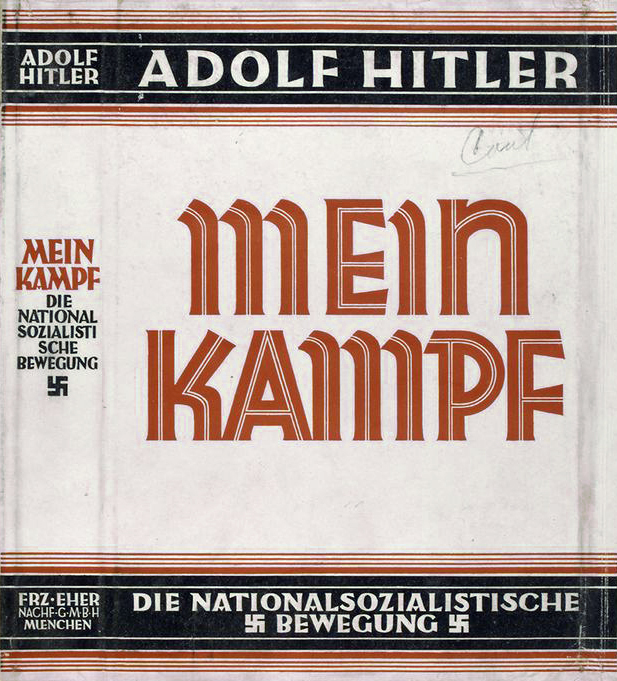

Mein Kampf by Adolf Hitler

- Mein Kampf( My Struggle or My Fight) is a 1925 autobiographical manifesto by Nazi Party leader Adolf Hitler.
- The work describes the process by which Hitler became antisemitic and outlines his political ideology and future plans for Germany.
- Volume 1 of Mein Kampf was published in 1925 and Volume 2 in 1926.
- The book was edited first by Emil Maurice, then by Hitler's deputy Rudolf Hess.
- Hitler began Mein Kampf while imprisoned for what he considered to be "political crimes" following his failed Putsch in Munich in November 1923.
- Although he received many visitors initially, he soon devoted himself entirely to the book.
- As he continued, he realized that it would have to be a two-volume work, with the first volume scheduled for release in early 1925.
- The governor of Landsberg noted at the time that "he hopes the book will run into many editions, thus enabling him to fulfill his financial obligations and to defray the expenses incurred at the time of his trial.
- After slow initial sales, the book became a bestseller in Germany following Hitler's rise to power in 1933.
- Order the Book
- Download the Soft Copy